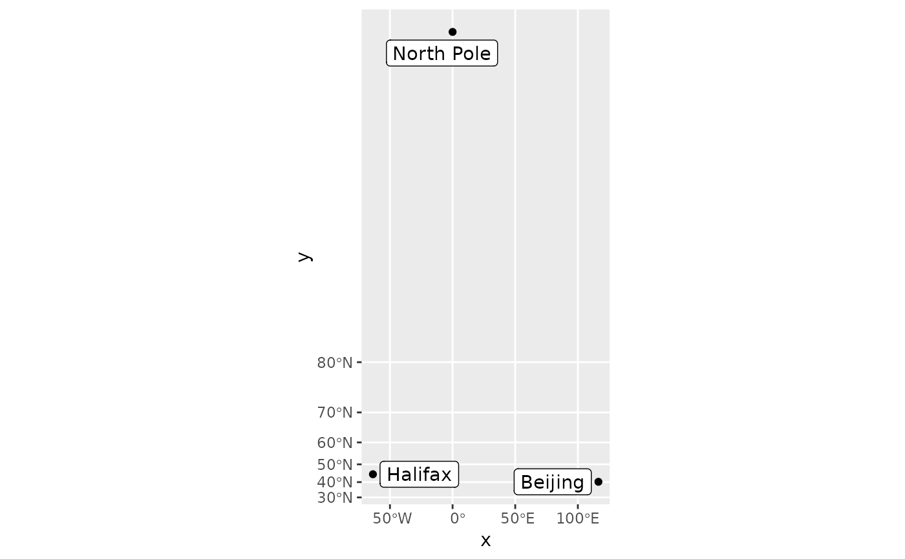

These layers are much like their counterparts, stat_identity,
geom_point, geom_path,
and geom_polygon, except they have a crs argument that
ensures they are projected when using coord_sf. Stats are applied to the x and y coordinates
that have been transformed.
stat_spatial_identity( mapping = NULL, data = NULL, crs = NULL, geom = "point", position = "identity", ..., show.legend = NA, inherit.aes = TRUE ) geom_spatial_point(mapping = NULL, data = NULL, crs = NULL, ...) geom_spatial_path(mapping = NULL, data = NULL, crs = NULL, ...) geom_spatial_polygon(mapping = NULL, data = NULL, crs = NULL, ...) geom_spatial_text(mapping = NULL, data = NULL, crs = NULL, ...) geom_spatial_label(mapping = NULL, data = NULL, crs = NULL, ...) geom_spatial_text_repel(mapping = NULL, data = NULL, crs = NULL, ...) geom_spatial_label_repel(mapping = NULL, data = NULL, crs = NULL, ...)
| mapping | An aesthetic mapping created with |
|---|---|
| data | A data frame or other object, coerced to a data.frame by |
| crs | The crs of the x and y aesthetics, or NULL to use default lon/lat crs (with a message). |
| geom | The geometry to use. |
| position | The position to use. |
| ... | Passed to the combined stat/geom as parameters or fixed aesthetics. |
| show.legend, inherit.aes | See |
cities <- data.frame( x = c(-63.58595, 116.41214, 0), y = c(44.64862, 40.19063, 89.9), city = c("Halifax", "Beijing", "North Pole") ) library(ggrepel) ggplot(cities, aes(x, y)) + geom_spatial_point(crs = 4326) + stat_spatial_identity(aes(label = city), geom = "label_repel") + coord_sf(crs = 3857)#>